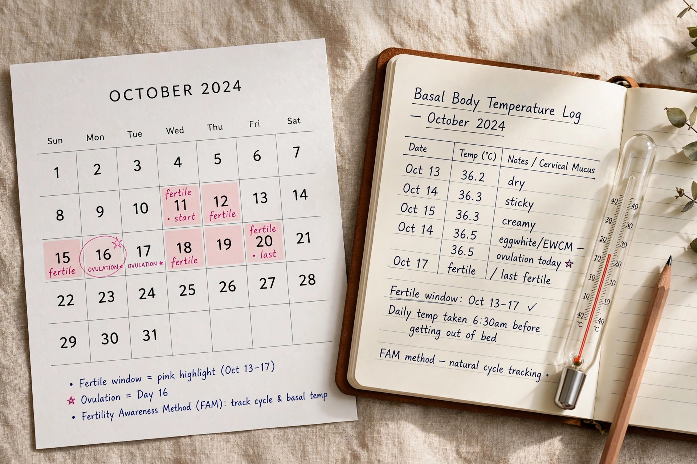

Calendar-based methods are fertility awareness methods of family planning in which the fertile window of the menstrual cycle is estimated from calendar records of past cycle lengths, rather than from daily signs such as basal body temperature or cervical mucus. They include the rhythm method, the Standard Days Method and calendar features in period-tracking apps.

The Knaus–Ogino (rhythm) method, developed independently in the 1920s–30s, estimates the first fertile day as the shortest past cycle minus 18 days and the last fertile day as the longest cycle minus 11. The Standard Days Method simplifies this: for cycles of 26–32 days, days 8–19 are treated as fertile, often tracked with CycleBeads.
Because ovulation timing varies, calendar-only methods are less reliable than symptothermal methods: typical-use pregnancy rates are considerably higher than with perfect use, and they offer no protection against sexually transmitted infections. App algorithms vary in evidence and are regulated differently across countries. See Fertility awareness and Menstrual cycle.